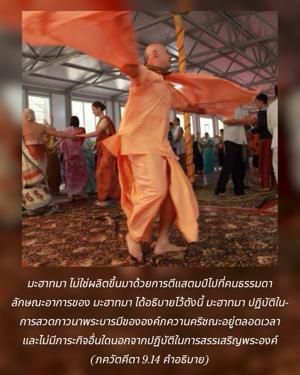
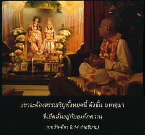

สวดภาวนาพระบารมีของข้าเสมอ พยายามด้วยความมั่นใจอย่างแน่วแน่ ก้มลงกราบต่อหน้าข้า ดวงวิญญาณผู้ยิ่งใหญ่เหล่านี้บูชาข้านิรันดรด้วยการอุทิศตนเสียสละ


มหาตฺมา ไม่ใช่ผลิตขึ้นมาด้วยการตีแสตมป์ไปที่คนธรรมดา ลักษณะอาการของ มหาตฺมา ได้อธิบายไว้ดังนี้ มหาตฺมา ปฏิบัติในการสวดภาวนาพระบารมีขององค์ภควานฺ กฺฤษฺณอยู่ตลอดเวลา และไม่มีภาระกิจอื่นใดนอกจากปฏิบัติในการสรรเสริญพระองค์ อีกนัยหนึ่งเขาไม่ใช่ผู้ไม่เชื่อในรูปลักษณ์ เมื่อมีคำถามเกี่ยวกับองค์ภควานฺเขาจะต้องสรรเสริญพระองค์ สรรเสริญพระนามอันศักดิ์สิทธิ์ รูปลักษณ์อมตะของพระองค์ คุณสมบัติทิพย์ของพระองค์ และลีลาอันน่าอัศจรรย์ของพระองค์ เขาจะต้องสรรเสริญทั้งหมดนี้ ดังนั้น มหาตฺมา จึงยึดมั่นอยู่กับองค์ภควานฺ
ผู้ที่ยึดติดอยู่กับลักษณะอันไร้รูปลักษณ์ขององค์ภควานฺ พฺรหฺม-โชฺยติรฺ นั้นมิได้อธิบายว่าเป็น มหาตฺมา ภควัท-คีตา โศลกต่อไปจะอธิบายถึงความแตกต่าง มหาตฺมา ปฏิบัติในกิจกรรมแห่งการอุทิศตนเสียสละรับใช้ต่างๆตลอดเวลา ดังที่ได้อธิบายไว้ใน ศฺรีมทฺ-ภาควตมฺ เช่น การสดับฟังและการสวดภาวนาเกี่ยวกับพระวิษฺณุ ไม่ใช่เกี่ยวกับเทวดาหรือมนุษย์ นั่นคือการอุทิศตนเสียสละ ศฺรวณํ กีรฺตนํ วิษฺโณห์ และ สฺมรณมฺ ระลึกถึงพระองค์ มหาตฺมา ผู้นี้มีความมุ่งมั่นอย่างแน่วแน่เพื่อบรรลุถึงจุดมุ่งหมายสูงสุดในการคบหาสมาคมกับองค์ภควานฺ หนึ่งในห้า รส ทิพย์ เพื่อบรรลุถึงผลสำเร็จนั้นเขาปฏิบัติกิจกรรมทั้งหลายไม่ว่าจะด้วยจิตใจ ร่างกาย และคำพูด ทุกสิ่งทุกอย่างปฏิบัติในการรับใช้องค์ภควานฺ ศฺรี กฺฤษฺณ เช่นนี้เรียกว่า กฺฤษฺณจิตสำนึกโดยสมบูรณ์
ในการอุทิศตนเสียสละรับใช้มีกิจกรรมบางอย่างที่เรียกว่ามุ่งมั่น เช่น การอดอาหารบางวัน ดังเช่นวันขึ้นสิบเอ็ดค่ำและวันแรมสิบเอ็ดค่ำ ซึ่งเรียกว่าวัน เอกาทศี และวันเสด็จลงมาขององค์ภควานฺ กฎเกณฑ์ทั้งหลายนี้ อาจารฺย ผู้ยิ่งใหญ่ได้ให้ไว้สำหรับพวกที่สนใจที่จะได้รับอนุญาตให้มาอยู่ใกล้ชิดกับบุคลิกภาพสูงสุดแห่งพระเจ้าในโลกทิพย์อย่างแท้จริง มหาตฺมา ดวงวิญญาณผู้ยิ่งใหญ่ถือปฏิบัติตามกฎเกณฑ์ทั้งหมดอย่างเคร่งครัด และจะบรรลุถึงผลดังใจปรารถนาอย่างแน่นอน
ดังที่ได้อธิบายไว้ในโศลกสองของบทนี้ว่าการอุทิศตนเสียสละรับใช้นี้ไม่เพียงง่ายเท่านั้น แต่ยังสามารถปฏิบัติได้ด้วยอารมณ์ที่มีความสุขไม่จำเป็นต้องปฏิบัติการบำเพ็ญเพียรและสมถะอย่างเคร่งเครียด เราสามารถใช้ชีวิตนี้ในการอุทิศตนเสียสละรับใช้ซึ่งพระอาจารย์ทิพย์ผู้ชำนาญเป็นผู้นำทาง เราอาจเป็น คฺฤหสฺถ สนฺนฺยาสี หรือ พฺรหฺมจารี ไม่ว่าจะอยู่ในสถานภาพเช่นไรและสถานที่แห่งใดในโลก เราสามารถปฏิบัติการอุทิศตนเสียสละรับใช้แด่บุคลิกภาพสูงสุดแห่งพระเจ้าได้และกลายมาเป็น มหาตฺมา ดวงวิญญาณผู้ยิ่งใหญ่อย่างแท้จริง